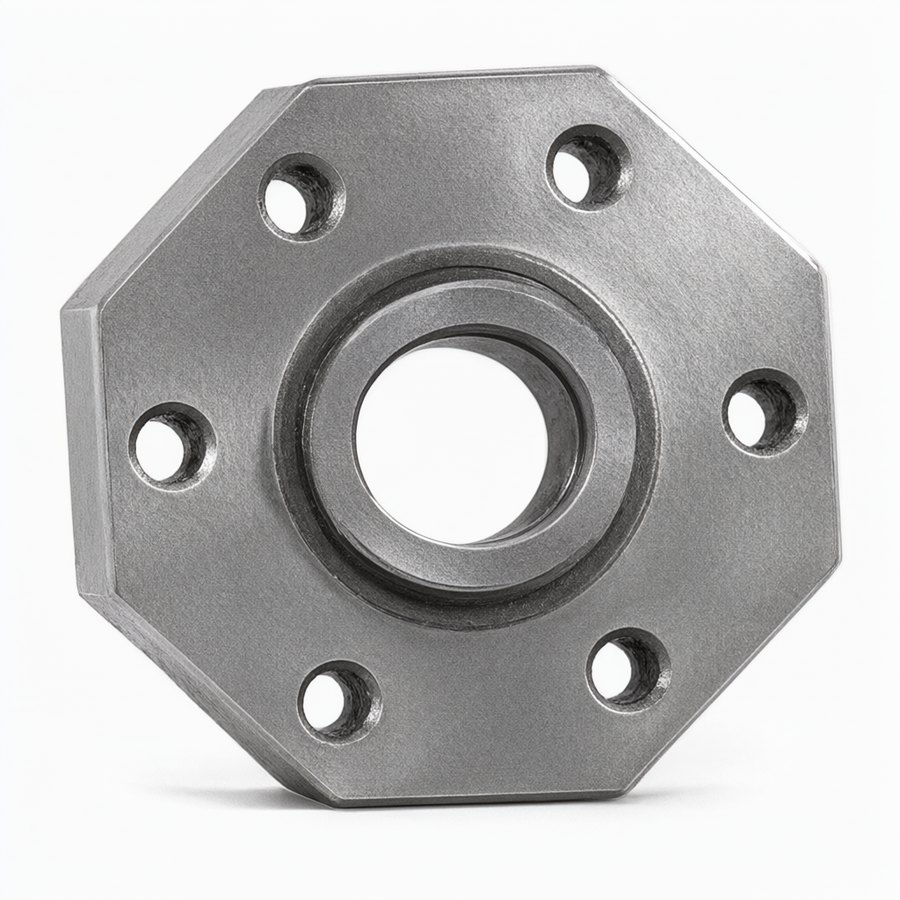
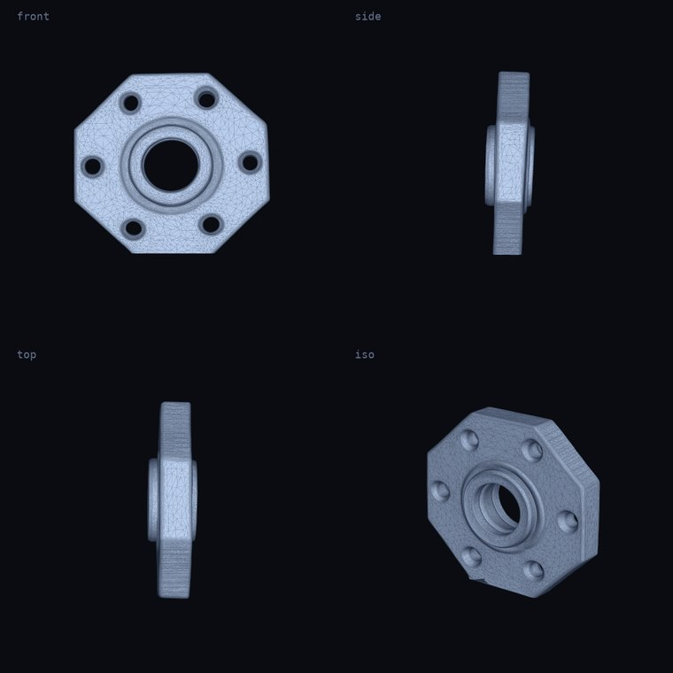
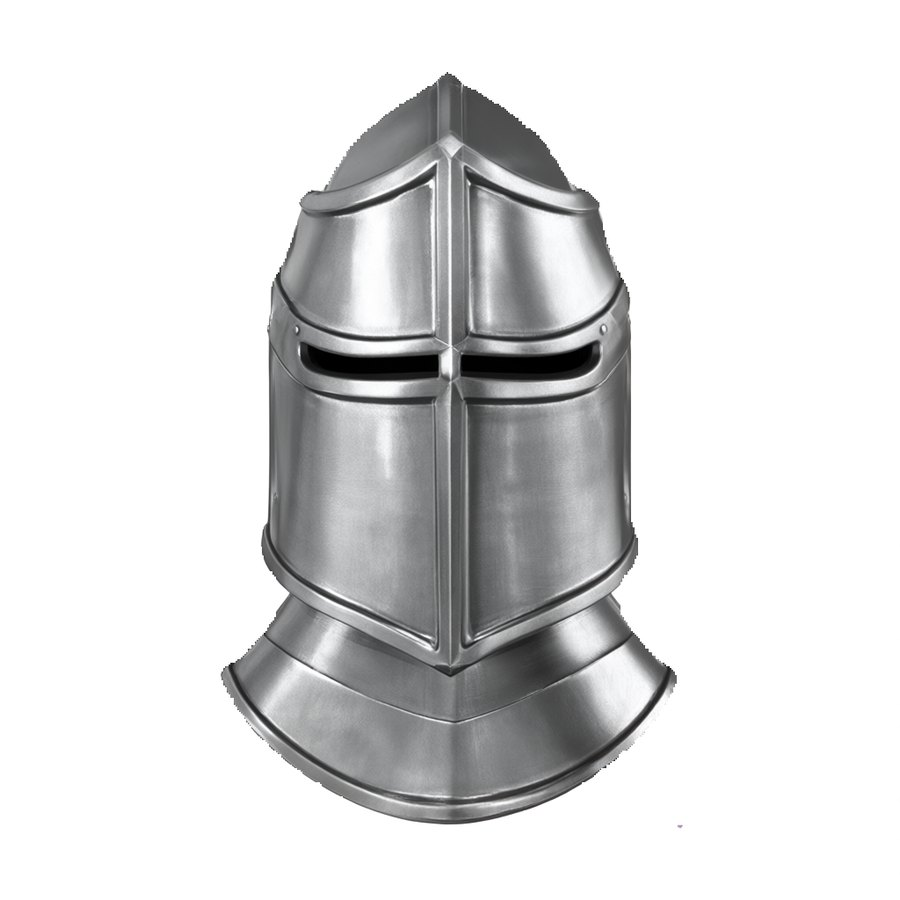
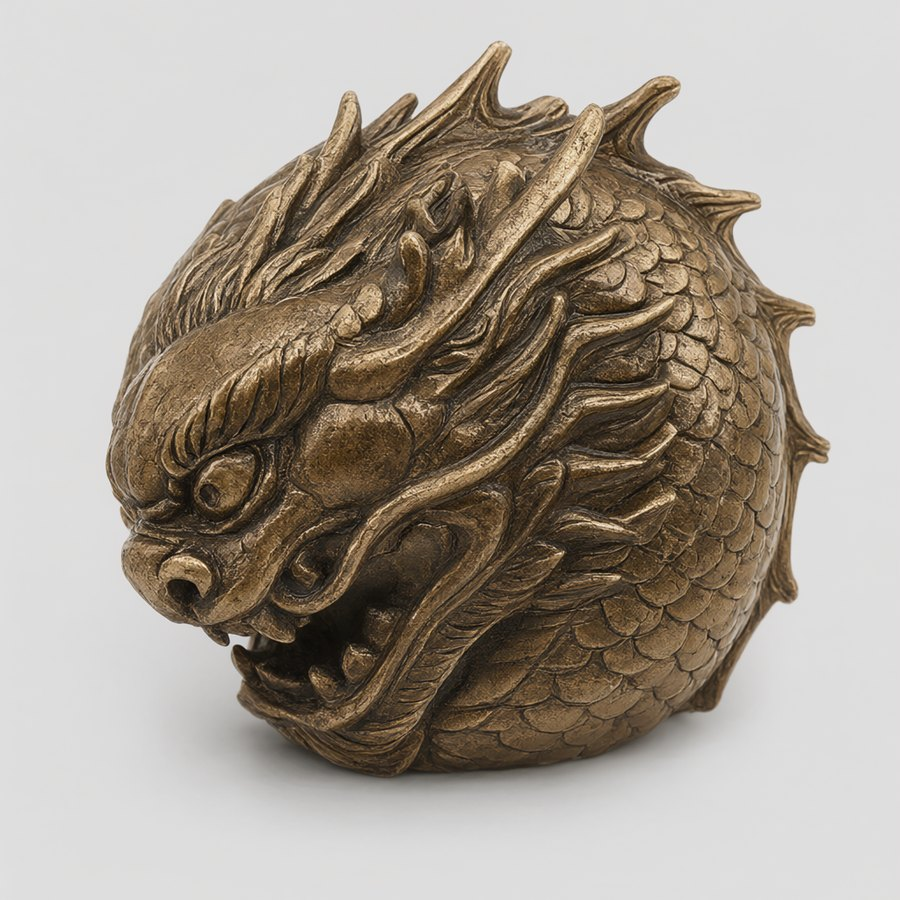
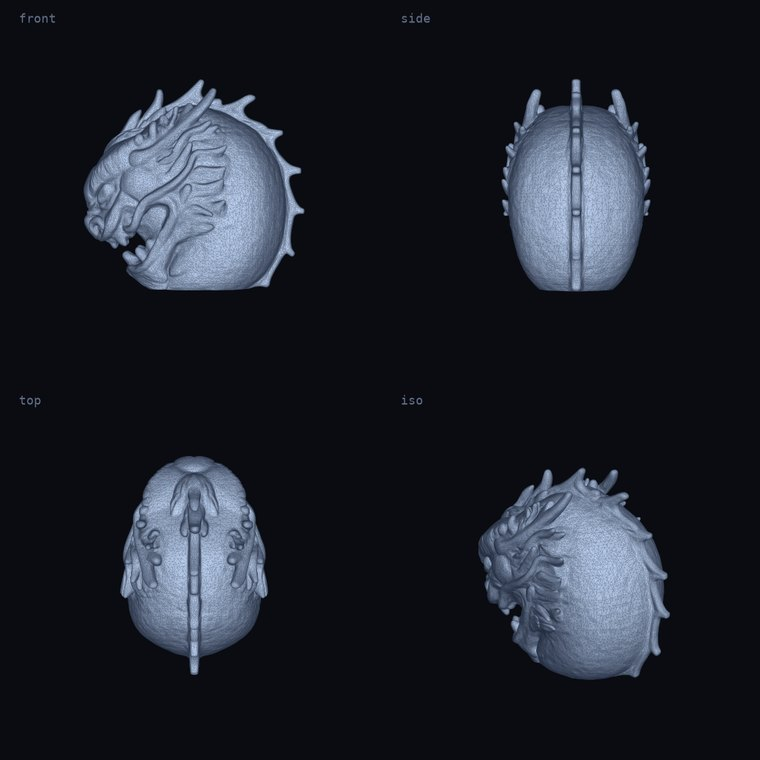
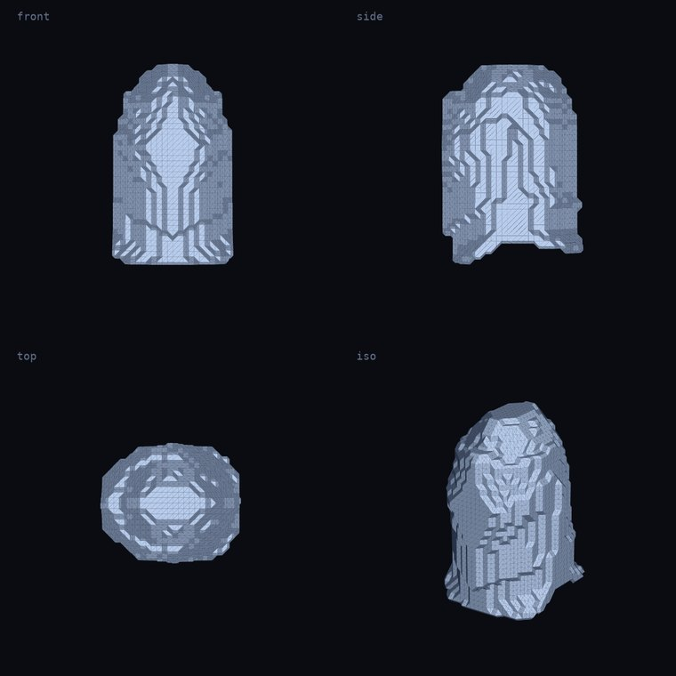
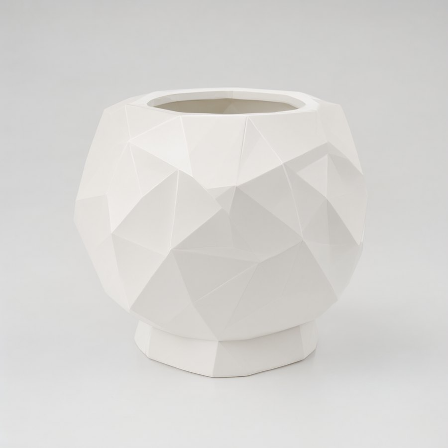
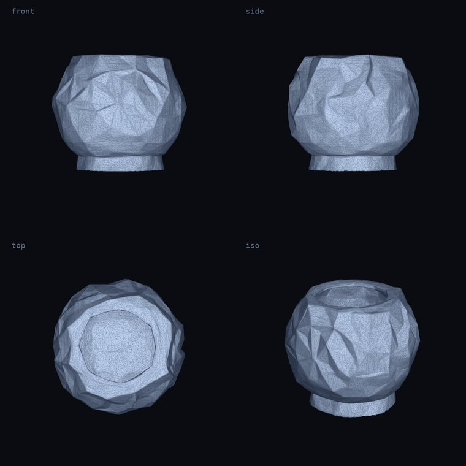

01
STL 实际几何 · 四视角六角法兰联轴器
水密 ✓六角法兰联轴器。中心轴孔 + 六个螺栓孔，用来测「机械件的小孔会不会糊掉」。
「一个六角法兰联轴器，工业机械传动零件，中心有轴孔和六个螺栓孔，金属质感，单件」
- 出图
- 150s
- 建模
- 487s
- 面数
- 200000
- 尺寸
- 80mm
- GLB
- 3.4 MB
- STL
- 3.8 MB
- 连通块
- 1
通过（单体，1 个连通块；六角法兰 + 中心轴孔 + 6 个螺栓孔都建出来了）
铸想 ForgeForm 把「一句话描述」变成「毫米级、水密、能直接切片的 STL」。 对话、出图、建模、修网格全部跑在自己的显卡上，不调任何云端 API。


01
STL 实际几何 · 四视角六角法兰联轴器。中心轴孔 + 六个螺栓孔，用来测「机械件的小孔会不会糊掉」。
「一个六角法兰联轴器，工业机械传动零件，中心有轴孔和六个螺栓孔，金属质感，单件」
通过（单体，1 个连通块；六角法兰 + 中心轴孔 + 6 个螺栓孔都建出来了）

02
STL 实际几何 · 四视角龙头球形摆件。鳞片与鬃毛是密度最高的区域，用来测「细节上限」。
「一个中国龙头造型的球形摆件，鳞片与鬃毛细节清晰，青铜质感，单件」
通过（单体，1 个连通块；鳞片与鬃毛在 512 octree 下保住了）

STL 实际几何 · 四视角中世纪骑士头盔。曲面对称、表面有明确的金属高光，用来测「细节能不能保住」。
「一顶中世纪骑士头盔，抛光金属质感，正面对称，适合 3D 打印的摆件，单件」
通过（6 个连通块，头盔面甲缝隙分裂，属这类形态常态）

04
STL 实际几何 · 四视角低多边形花盆。大平面折角 + 平整底面，用来测「打印友好」这一侧。
「一个低多边形多面体花盆，几何折面造型，陶瓷白，底部平整可放置，单件」
通过（单体，1 个连通块；折面造型和底面都完整）
本地 LLM 把「小一点、放桌上那种」翻译成 size_mm=90，该追问才追问。
提示词自动加单体 / 纯色背景 / 无道具约束 —— 好看不是目的，能建模才是。
Hunyuan3D 2.1 出网格，约 10 万顶点。四档质量，从 160 秒到 12 分钟。
pymeshlab 补洞 → is_watertight 复检边界边 → 不合格再走 pymeshfix。
毫米单位、居中贴地、减面到可切片。直接拖进 Bambu Studio。
| 阶段 | 模型 / 档位 | 耗时 | 显存占用 | 备注 |
|---|---|---|---|---|
| 出图 1024² | Qwen-Image-2.1 · 20 步（标准档） | ≈ 56 s | ≈ 20 GB | 纯生成 |
| 出图 1024² | Qwen-Image-2.1 · 30 步（高精度档） | ≈ 140–170 s | ≈ 20 GB | 含中→英翻译 24–48 s |
| 建模 | Hunyuan3D 2.1 · 高质量 512 | ≈ 8–10 min | ≈ 16 GB | 本页 4 个样本实测 487–568 s |
| 建模 | Hunyuan3D 2.1 · 快速 256 | ≈ 160 s | ≈ 14 GB | 草稿用，细节丢得多 |
| 建模 | TripoSplat (fp16) | ≈ 6.7 min | ≈ 15 GB | 兜底后端 |
| 视频 832×480 | MiniMax H3 Ref2VA · 96 帧 | ≈ 19 min | ≈ 20 GB | 可选分支 |
| STL 优化 | trimesh + pymeshlab（纯 CPU） | ≈ 3–6 s | 0 | 20 万面 → 8 万面 |
首次运行自动生成 config.json、建好输出目录、跑自检。